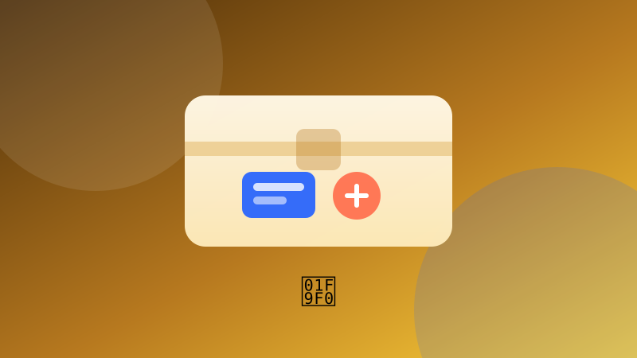

🧰 Handige toolsOrganiseer je Downloads-map
Sorteer bestanden automatisch in mappen op basis van hun extensie.
Speel dit idee opent de app en voert het volledige programma meteen uit. Je voortgang wordt lokaal in je browser bewaard.
1 Waar gaat dit over?
Een script dat je echt kunt gebruiken. Je leert werken met pathlib, bestanden verplaatsen en — heel belangrijk — eerst een droge run doen voordat je iets aanraakt. Veiligheid boven alles.
2 Wat leer je?
3 Stap voor stap
Bekijk wat er in de map staat
Path.home() geeft je gebruikersmap. Met iterdir() loop je door de inhoud. Print eerst alleen de namen: nog niets verplaatsen.
from pathlib import Path
map = Path.home() / "Downloads"
for bestand in map.iterdir():
print(bestand.name)Bepaal de doelmap per extensie
Een woordenboek koppelt elke extensie aan een mapnaam. Bestanden met een onbekende extensie laat je staan.
doelen = {
".jpg": "Afbeeldingen",
".jpeg": "Afbeeldingen",
".png": "Afbeeldingen",
".pdf": "Documenten",
".docx": "Documenten",
".txt": "Documenten",
".zip": "Archieven",
".mp4": "Videos",
}
print("Aantal regels:", len(doelen))Doe eerst een droge run
Print wat je zou verplaatsen zonder het echt te doen. Controleer de lijst goed. Dit voorkomt dat je per ongeluk bestanden kwijtraakt.
for bestand in map.iterdir():
if not bestand.is_file():
continue
doel = doelen.get(bestand.suffix.lower())
if doel:
print("Zou verplaatsen:", bestand.name, "->", doel)
else:
print("Overslaan:", bestand.name)Verplaats de bestanden
Maak de doelmap aan met mkdir(exist_ok=True) en verplaats daarna elk bestand met rename(). Test dit eerst op een kopie van je map.
for bestand in map.iterdir():
if not bestand.is_file():
continue
doel = doelen.get(bestand.suffix.lower())
if not doel:
continue
doel_map = map / doel
doel_map.mkdir(exist_ok=True)
bestand.rename(doel_map / bestand.name)
print("Verplaatst:", bestand.name)Maak een logboek
Schrijf voor elk verplaatst bestand de oude en nieuwe locatie naar een CSV. Zo kun je later terugzoeken waar iets naartoe is gegaan.
import csv
with open("verplaatsingen.csv", "a", newline="", encoding="utf-8") as log:
schrijver = csv.writer(log)
schrijver.writerow(["oud", "nieuw"])
# Binnen de loop, na het verplaatsen:
# schrijver.writerow([str(bestand), str(doel_map / bestand.name)])
print("Logboek bijgewerkt.")4 Tips
- Test altijd op een tijdelijke map voordat je je echte Downloads-map sorteert.
- Sla verborgen bestanden over, zoals .gitignore of configuratiebestanden.
- Maak een undo-script dat het CSV-logboek terugleest.